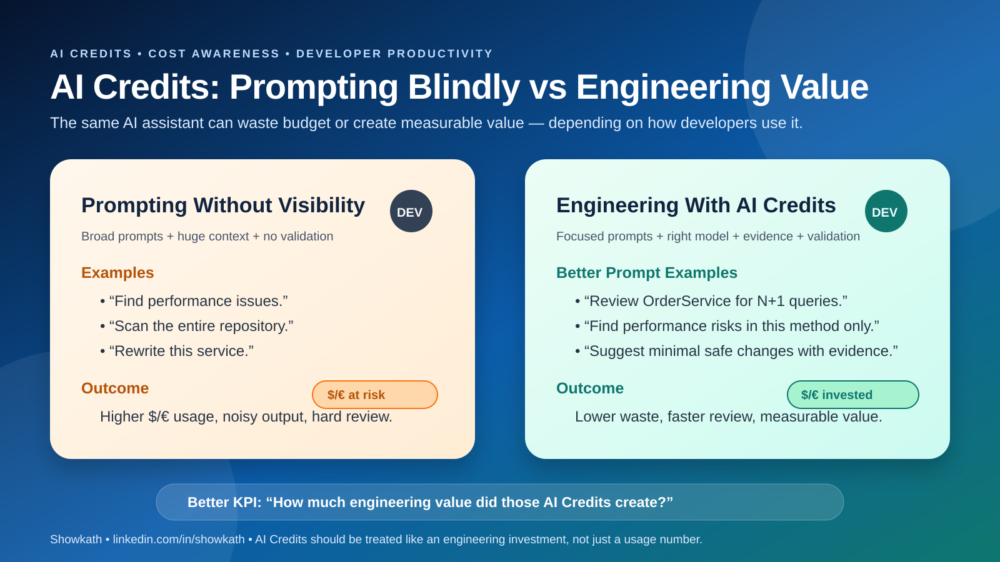
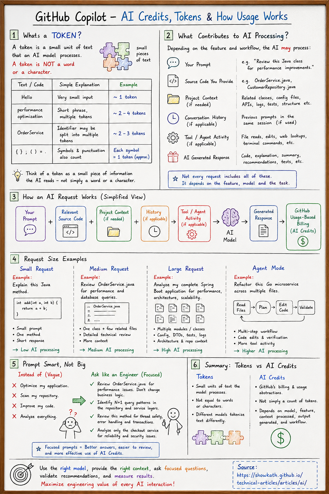
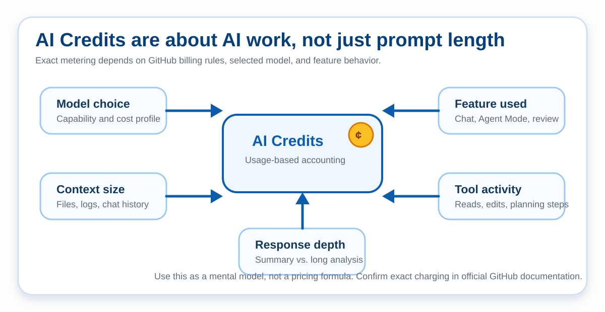
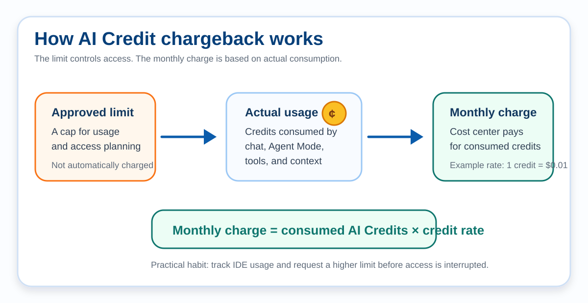

Beyond Prompts: Engineering with GitHub Copilot in the AI Credits Era
A practical guide for developers and engineering teams who want to use GitHub Copilot more intentionally: better prompts, better context, better validation, and better engineering outcomes.
Executive Summary
AI Credits are a usage signal
GitHub Copilot's usage-based billing encourages developers to think about AI requests the same way they think about cloud resources: useful, powerful, and worth managing intentionally.
Tokens are not the whole story
AI Credit usage depends on the model and AI processing involved, including input, output, cached context, tool calls, and the amount of repository context being analyzed.
Prompting is now engineering work
Strong prompts define scope, constraints, files, expected output, validation criteria, and what should not be changed.
Teams scale through workflows
The most valuable thing to share is not a single magic prompt. It is the reasoning, workflow, verification strategy, and decision-making behind AI-assisted work.
AI Credits in Practice: Two Developer Behaviors

Cost-Effective Prompting: Review Incrementally
If your goal is to get strong results while using fewer GitHub Copilot AI Credits, ask Copilot to analyze incrementally instead of reviewing the entire repository in one request.
Analyze the entire repository and find every performance issue. This can send a large amount of code to the model and make the output harder to validate.
Act as a senior Java and performance engineer.
First understand the project architecture.
Identify only the components most likely to impact production performance:
- REST controllers
- Service layer
- Database access
- HTTP clients
- Async processing
- Caching
- Thread pools
Review only those components first.
For each finding provide:
- File
- Severity
- Root cause
- Recommended code change
- Expected impact
When finished, stop and wait for my confirmation before reviewing additional files.This is cheaper because it reviews a subset of files at a time, lets the conversation reuse context, and allows you to stop once you have enough useful findings.
| Practice | AI Credit usage | Quality |
|---|---|---|
| Review entire repository at once | Very high | High, but hard to validate |
| Review one module at a time | Low | High |
| Review one package at a time | Very low | High |
| Review one class at a time | Lowest | Very high |
| Ask for fixes after issues are found | Efficient | Very high |
| Keep the same chat for follow-up reviews | Lower | Better context |
Why This Matters Now
The transition to usage-based billing for some GitHub Copilot capabilities has sparked active developer conversations around transparency, predictability, and how different models consume AI Credits.
While learning about GitHub Copilot's usage-based billing, I realized the real question is not simply "How many AI Credits do I have?" The better engineering question is "Am I using those credits effectively?"
This is similar to cloud computing. A higher cloud budget does not mean you instantly spend the full amount. It means your system has permission to consume resources up to that limit. Engineering discipline still decides whether the usage is valuable.
AI Credits vs. Tokens
AI Credits and tokens are related concepts, but they are not the same thing. A common developer question is: "What exactly am I being charged for?"
The short answer: GitHub Copilot usage-based billing is based on the AI resources required to process your request, not simply the number of words you type. Usage can depend on the model, the feature used, the amount of context processed, tool activity, and the response generated. Always refer to GitHub's official documentation for the latest pricing details.
| Concept | What it means | Why engineers should care |
|---|---|---|
| Input tokens | The prompt, selected files, chat history, repository context, logs, and instructions sent to the model. | Large context can increase processing even before the model generates an answer. |
| Output tokens | The generated explanation, code, test cases, summary, or plan returned by the model. | Requesting long, broad answers can increase output size and review effort. |
| Cached context | Previously processed context that may be reused by the system depending on the product flow and model behavior. | Caching can influence processing cost, but developers should still keep context focused. |
| AI Credits | A billing and usage abstraction that can depend on the selected model and the AI processing involved. | Credits help teams reason about cost, usage patterns, and governance. |
What Is a Token?
A token is a small unit of text that an AI model processes. A token is not always a full word, and it is not always a single letter. Code is also tokenized: keywords, identifiers, symbols, punctuation, and strings can all become tokens.
| Text or code | Simple interpretation | What the model sees |
|---|---|---|
Hello | Very small input | Usually about one token, depending on tokenizer behavior. |
performance optimization | Short phrase | Multiple tokens because the phrase contains separate text pieces. |
const userId = req.params.id; | TypeScript code | Keywords, identifiers, operators, punctuation, and values are processed as tokens. |
def recommend_products(user_id): | Python code | Function keywords, names, punctuation, and parameters are all processed. |

Why Context Matters
Your question is only one part of what the AI may process. Depending on the feature and task, Copilot may also use selected files, related code, chat history, repository context, logs, tests, configuration files, or tool results.
| Request size | Example | Typical context |
|---|---|---|
| Small | Create a unit test for a Python utility function. | One function, one test style example, and a focused response. |
| Medium | Review a TypeScript checkout API route for validation and async error handling. | One route, one service, related types, and targeted recommendations. |
| Large | Analyze a full Spring Boot or Node.js application for performance risks. | Multiple modules, configuration, services, data access code, DTOs, tests, and architecture context. |
| Agent Mode | Refactor a Go or Java microservice across several files. | Multiple file reads, planning, code generation, edits, and follow-up checks. |
Cost Calculation Examples
Exact AI Credit consumption depends on GitHub's current billing rules, the model selected, and the product feature used. The examples below are intentionally conceptual, so teams can reason about cost patterns without pretending to know GitHub's internal metering formula.
AI Credit usage ≈ model cost profile × amount of context processed × output depth × tool/workflow complexity

| Scenario | Likely context size | Engineering value | Cost-aware approach |
|---|---|---|---|
| Explain one Python data-processing function | Low | Fast onboarding and code comprehension | Attach the function, sample input, and expected output only. |
| Review a TypeScript checkout route | Low to medium | Improves production reliability and API safety | Attach the route, service, request schema, and one existing test style example. |
| Review repository architecture | High | Useful for modernization and design review | Start with module map, build files, and package structure before asking for full analysis. |
| Debug production incident logs | Medium to high | Potentially high impact | Redact secrets, include only relevant log windows, error stack traces, and recent changes. |
Prompt Smarter, Not Bigger
A strong prompt is not just a longer prompt. A strong prompt behaves like a precise engineering task definition.
| Instead of asking | Ask like an engineer | Why this is better |
|---|---|---|
| Optimize my application. | Review ProductSearchService.java for performance bottlenecks without changing business logic. Focus on database calls, pagination, memory allocation, and logging. |
Defines scope, file, constraints, and review dimensions. |
| Scan my repository. | Identify possible N+1 query patterns in the repository and service layers. Return file names, suspected methods, and verification steps. | Turns a broad scan into a targeted investigation. |
| Improve my code. | Review this method for thread safety, null handling, exception handling, and transaction boundaries. Suggest minimal changes only. | Prevents unnecessary rewrites and keeps changes reviewable. |
GitHub Copilot AI Credits: Prompt Like an Engineer, Not Just a User
With GitHub Copilot's usage-based billing, effective AI usage is no longer only about getting a useful answer. It is also about using AI resources wisely. AI Credit consumption can depend on the selected model, the feature used, the amount of context processed, tool activity, and output depth. It is not determined only by the number of words typed into the prompt.
| Common habit | Engineering habit | Why it helps |
|---|---|---|
Analyze my entire repository and optimize everything. |
Break the task into focused requests: explain one module, review one service, identify N+1 query patterns, check thread safety, or suggest memory optimizations without changing business logic. | Smaller requests are easier to review, validate, and implement. |
Optimize my application. |
Review ProductSearchService.java for database query efficiency, memory usage, response-time optimization, exception handling, and logging improvements. |
Specific prompts produce more actionable recommendations with clearer evidence. |
| Expect one magic prompt to solve everything. | Follow an engineering workflow: understand the problem, ask focused questions, validate every recommendation, measure results, and iterate. | AI accelerates analysis, but engineering judgment decides what should be implemented. |
| Use the same model and mode for every task. | Use lighter assistance for explanations, routine coding, small bug fixes, and unit tests. Reserve stronger models or Agent Mode for architecture reviews, complex debugging, multi-file refactoring, and repository-wide changes. | Model and workflow selection can balance capability, review effort, and AI Credit usage. |
Vague Prompt vs. Effective Prompt Examples
Vague prompts are unclear or too broad. They can produce less relevant answers, require more follow-up questions, and make recommendations harder to validate. Effective prompts define the target file or component, the engineering goal, the constraints, and the output format.
Java / Spring Boot
Make my product search faster.Review ProductSearchService.java for performance issues.
Focus only on:
- search query efficiency
- repeated database calls
- pagination behavior
- caching opportunities
Do not change business logic or public APIs.
Return findings with severity, evidence, and verification steps.Python / FastAPI
Improve my recommendation API.Review this FastAPI product recommendation route and service.
Focus on:
- blocking I/O inside async handlers
- unnecessary database queries
- large in-memory filtering
- repeated external API calls
Suggest minimal changes only.
Include how to validate with tests, logs, or metrics.TypeScript / Node.js
Fix my checkout API.Review this TypeScript Express checkout route and payment service.
Focus on:
- input validation
- async error handling
- sensitive data in logs
- repeated payment provider calls
- request and response type safety
Return a checklist of issues and minimal code-change recommendations.Go / Microservices
Analyze my Go service and improve reliability.Review this Go HTTP handler and repository function.
Focus on:
- context cancellation
- timeout handling
- database error handling
- retry behavior
- structured logging
For each finding include:
- severity
- root cause
- minimal code change
- test or observability check
Do not change public API behavior.Beyond Vibe Coding: Modern AI Patterns for Developers
"Vibe coding" is useful for exploration, prototypes, and learning. But production engineering needs more than vibes: clear intent, controlled context, repeatable workflows, validation, and cost awareness.
Context Budgeting
Set a mental budget before asking: one file, one module, one stack trace, or one design decision. Avoid attaching the whole repository unless the task truly requires it. If a conversation has shifted significantly, start a fresh session to keep context focused on the current problem.
Agentic Workflow
Let chat or coding agents plan, inspect, edit, and validate in small steps. Agent Mode is valuable for large refactoring, multi-file feature work, complex debugging, and repository-wide changes. For explaining one method or reviewing one class, a focused chat request is often enough.
Model Routing
Use lighter models for summaries, boilerplate, and routine edits. Use advanced models for architecture, security, incident analysis, and high-risk design trade-offs.
Prompt Templates
Save reusable prompts for performance review, security review, test generation, migration planning, and pull request risk analysis.
Cost-Effective AI Usage Examples
| Task | Cost-aware pattern | Why it works |
|---|---|---|
| Understand a large codebase | Ask for package/module map first, then analyze one flow at a time. | Reduces unnecessary context and creates a reusable mental model. |
| Fix a bug | Provide the failing test, stack trace, related method, and expected behavior. | Focuses the model on evidence instead of broad guessing. |
| Review architecture | Ask for trade-offs and risks before requesting code changes. | Prevents expensive rewrites and improves decision quality. |
| Generate tests | Attach one production class and one existing test style example. | Improves consistency while keeping context small. |
| Security review | Ask for abuse cases, sensitive data exposure, auth assumptions, and unsafe logging. | Moves beyond syntax review into real production risk. |
Prompt Examples for Java, Python, and TypeScript
The same engineering principles apply across programming languages: define scope, describe constraints, ask for evidence, and validate the result with tests or runtime signals.
Performance Review
Review ProductSearchService.java for performance risks.
Focus on:
- N+1 database queries
- unnecessary object allocation
- repeated remote calls
- logging inside loops
- transaction boundaries
Do not rewrite the class. Return findings with severity,
evidence, and suggested verification steps.Spring Boot Architecture Review
Analyze this Spring Boot module for architecture concerns.
Check whether controllers, services, repositories, DTOs,
and domain logic are separated clearly.
Return:
1. current responsibility boundaries
2. coupling risks
3. refactoring options with trade-offs
4. changes that should be avoidedSecurity Review
Review this Spring REST controller for security issues.
Focus on:
- authentication assumptions
- authorization checks
- input validation
- sensitive data exposure
- unsafe logging
- exception messages returned to clients
Provide concrete findings and safe remediation ideas.Test Generation
Create JUnit 5 tests for this method using Mockito.
Follow the existing test style in ProductSearchServiceTest.java.
Cover:
- successful path
- validation failure
- repository exception
- edge case for empty input
Do not change production code unless a testability issue is found.Python API Performance Review
Review this FastAPI endpoint and service function for performance risks.
Focus on:
- unnecessary database queries
- blocking I/O inside async routes
- large in-memory transformations
- repeated external API calls
- missing pagination or caching
Do not rewrite the whole module. Return findings with severity,
evidence, minimal code-change options, and validation steps.TypeScript / Node.js Review
Review this TypeScript Express route and service for production risks.
Focus on:
- input validation
- async error handling
- unsafe logging of sensitive data
- repeated database or HTTP calls
- type safety around request and response objects
Suggest minimal changes only and include tests or verification steps.Realistic Code Review Example
When asking Copilot to review code, include enough surrounding context to understand intent, but avoid dumping unrelated files.
app.post('/checkout', async (req, res) => {
const cart = req.body.cart;
const userId = req.body.userId;
const user = await userRepository.findById(userId);
const total = cart.items.reduce((sum, item) => sum + item.price, 0);
console.log('checkout request', { user, cart });
const payment = await paymentClient.charge(user.cardToken, total);
await orderRepository.save({ userId, cart, paymentId: payment.id });
res.json({ status: 'success', paymentId: payment.id });
});Performance, Architecture, and Security Review Examples
Performance workflow
- Ask Copilot to identify suspected bottlenecks.
- Ask for evidence and why each issue matters.
- Validate with profiling, metrics, or targeted tests.
- Apply the smallest safe change.
- Compare before and after latency, CPU, memory, and database calls.
Architecture workflow
- Start with package structure and module boundaries.
- Ask for coupling, cohesion, and responsibility concerns.
- Request trade-offs, not only recommendations.
- Convert findings into small refactoring steps.
- Document the architectural decision in the pull request.
Security workflow
- Review authentication, authorization, input validation, and logging.
- Check generated code for secret exposure and unsafe defaults.
- Validate with tests and security scanning where available.
- Ask for abuse cases, not only happy-path fixes.
- Get human security review for high-risk changes.
Pull request workflow
- Ask Copilot to summarize intent and risk areas.
- Ask it to identify missing tests and migration concerns.
- Use the output as a checklist, not an approval.
- Record what was verified manually.
- Keep final accountability with the engineering team.
Engineering Principles for AI-Assisted Development
Cost Awareness
Treat AI Credits like CPU, memory, database capacity, and cloud budget. Usage is not bad; unmanaged usage is the problem.
Context Management
Provide only the files, logs, requirements, and constraints needed for the task. More context is not always better.
Model Selection
Use advanced models for architecture, complex debugging, and security reasoning. Use lighter models for routine explanations and mechanical edits when appropriate.
Incremental Problem Solving
Break large requests into smaller tasks that can be reviewed, tested, and measured independently.
Security First
Review AI-generated code for secrets, authentication, authorization, data exposure, dependency risk, and input validation.
Validation Over Blind Trust
AI suggests; engineers decide. Validate with tests, profiling, logs, peer review, and production-safe rollout practices.
Document AI-Assisted Changes
Explain why a change was made, what was generated, what was modified, and what was verified during review.
Measure Results
For performance work, compare response time, CPU, memory, throughput, database round trips, and error rates before and after changes.
Knowledge Sharing and Leadership
One of the biggest strengths of an engineering team is knowledge sharing. As developers grow in their careers, impact comes not only from solving complex problems, but also from helping others understand the reasoning and workflow behind the solution.
In the AI-assisted development era, leadership includes teaching teams how to ask better questions, choose the right amount of context, evaluate generated output, and document decisions. Sharing only the final prompt is less valuable than sharing the entire workflow.
| Share less of | Share more of |
|---|---|
| One magic prompt | The task framing, constraints, review checklist, and validation method |
| Generated output only | The reasoning used to accept, modify, or reject the output |
| AI as a shortcut | AI as a pair programmer that still requires engineering judgment |
Enterprise Perspective: AI Credits in Large Organizations
Usage-based billing is not only a developer concern. In large enterprises, actual AI Credit consumption can be charged back monthly to a cost center, department, project, platform team, or engineering budget.
That means AI usage becomes both a technical and financial consideration. The objective should not be to limit AI usage blindly. The objective should be to ensure that AI usage creates meaningful engineering value.

For Developers
Your goal is not simply to reduce AI usage. Your goal is to maximize value from each request.
- Start with focused prompts instead of repository-wide analysis.
- Provide only the necessary files and context.
- Choose the appropriate model for the task.
- Validate AI recommendations before implementation.
- Use AI to accelerate engineering, not replace engineering judgment.
For Technical Leads
Technical leads help teams use AI consistently, safely, and effectively.
- Create prompt templates for common engineering tasks.
- Share successful workflows across the team.
- Encourage validation through code reviews.
- Select appropriate AI models for different use cases.
- Track where AI genuinely improves productivity.
For Engineering Managers
Engineering managers balance productivity, quality, developer experience, and operational costs.
- Measure time saved and review efficiency.
- Track defects prevented and quality improvements.
- Consider faster onboarding and knowledge transfer.
- Include developer satisfaction in the discussion.
- Accept higher AI cost when it creates clearly higher engineering value.
For Cost Center Owners
Cost owners should optimize return on investment, not simply minimize spending.
- Identify which teams derive the most value.
- Understand which models are used most frequently.
- Check whether simpler models can handle routine tasks.
- Invest in prompt engineering training.
- Monitor usage trends over time.
For Enterprise Architects
Enterprise AI adoption should include governance, not just tooling.
- Define AI usage guidelines and approved models.
- Align with security, compliance, and data classification rules.
- Establish prompt engineering standards.
- Promote knowledge sharing and reusable patterns.
- Build cost visibility and responsible AI practices into the SDLC.
Shared Responsibility
Developers, leads, managers, architects, and budget owners each see a different part of the same system.
When they align, AI becomes more than a productivity tool. It becomes an engineering capability with measurable value.
Example: Same Problem, Different Operating Model
| Team A | Team B | Likely outcome |
|---|---|---|
| Runs repository-wide AI analysis every day. | Reviews one service at a time with targeted prompts. | Team B usually gets lower AI consumption and easier validation. |
| Each developer invents prompts independently. | Reuses successful prompt templates and shares findings internally. | Team B creates better knowledge sharing and more predictable results. |
| Measures usage only by monthly AI spend. | Measures value through quality, onboarding, review speed, and productivity. | Team B has higher confidence in AI-generated changes and ROI. |
AI Usage Maturity Model
| Level | Organization behavior |
|---|---|
| Level 1 – Experimenting | Developers use AI individually without shared practices. |
| Level 2 – Standardizing | Teams begin sharing prompts, workflows, and repeatable review patterns. |
| Level 3 – Optimizing | Model selection, context management, and cost awareness become part of engineering practices. |
| Level 4 – Governing | Organizations establish AI governance, security standards, usage metrics, and cost visibility. |
| Level 5 – Engineering with AI | AI is integrated into the software development lifecycle with measurable productivity improvements and continuous optimization. |
What I Would Like GitHub to Improve
Estimated AI Credit cost before execution
A pre-flight estimate, similar to cloud cost estimators, would help developers decide whether to narrow context, choose another model, or split a task.
Usage breakdown by workflow
Teams would benefit from seeing whether credits are mostly used for chat, repository analysis, pull request review, CLI, or other workflows.
Context size visibility
A simple indicator showing approximate context size before sending a request would encourage better context management.
Team-level best practice insights
Aggregated recommendations could help organizations learn which usage patterns produce the best outcomes without exposing private code or sensitive prompts.
Monitoring Usage
If your organization exposes billing information, check your organization's Billing & Licensing or Copilot settings. If you do not see those options, access may be restricted to administrators.
For GitHub Enterprise Administrators
Depending on organization settings and permissions, administrators may be able to view AI Credit consumption, spending limits, current billing period usage, and organization-wide Copilot usage from billing or licensing pages.
For Developers
Some organizations expose individual usage information. If you cannot see AI Credit or billing details, ask your GitHub Enterprise administrator where Copilot usage is monitored for your team.
For CLI usage, GitHub also documents session-limit controls in the Copilot CLI session limit documentation. This is useful for developers who want guardrails while experimenting with command-line AI workflows.
Closing Thoughts
The future is not AI versus developers. It is developers, architects, technical leads, engineering managers, and organizations learning how to engineer effectively with AI.
Success will not be measured only by how much AI we use. It will be measured by how responsibly we use it, how effectively we validate it, how well we share knowledge, and the value it creates for our teams and customers.
References
- GitHub Docs: Usage-based billing for GitHub Copilot
- GitHub Docs: GitHub Copilot models and pricing
- GitHub Docs: Set a session limit for GitHub Copilot CLI
- GitHub Community Discussion #198015: Copilot AI Credits discussion
- GitHub Docs: GitHub Copilot documentation
Connect
Author LinkedIn: linkedin.com/in/showkath